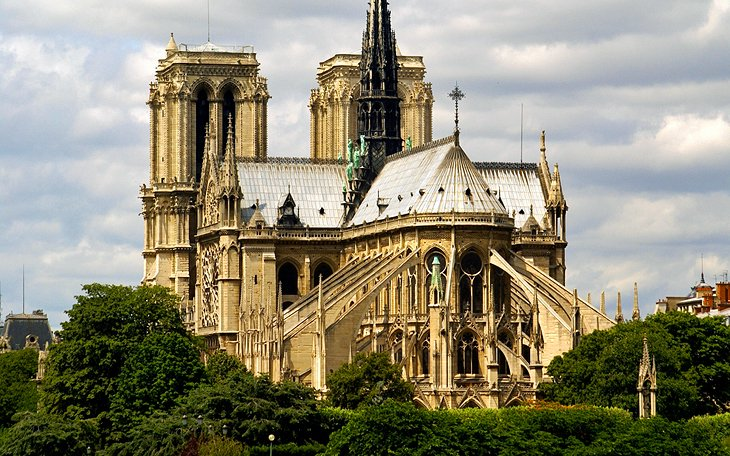
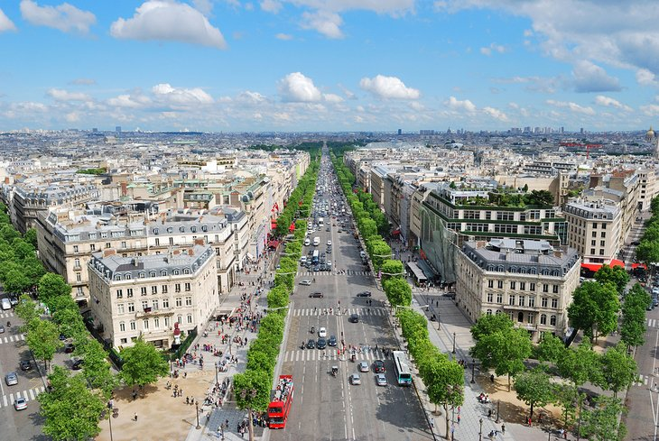

Top-Rated Tourist Attractions in Greece
Greece is a country in southeastern Europe with thousands of islands throughout the Aegean and Ionian seas. Influential in ancient times, it's often called the cradle of Western civilization. Athens, its capital, retains landmarks including the 5th-century B.C. Acropolis citadel with the Parthenon temple. Greece is also known for its beaches, from the black sands of Santorini to the party resorts of Mykonos.
1. Acropolis, Athens
The Eiffel Tower (la Tour Eiffel) ranks high on the list of places to visit in France and is the most-visited tourist attraction in the world. It's hard to believe that the structure was dismissed as a monstrosity when it was first unveiled. The iconic tower was designed by Alexandre-Gustave Eiffel for the Paris Exhibition of 1889, which marked the centenary of the French Revolution.
2. Musée du Louvre
A sumptuous palace that was once the home of France's kings, the Louvre is the most important of Paris' top museums. Visitors enter the museum in the courtyard of the palace at the Pyramid du Louvre, the glass pyramid designed by Ieoh Ming Pei in 1917. The Musée du Louvre displays thousands of artworks, many of which are considered masterpieces, from antiquities to European paintings of the 15th to 19th centuries. It is impossible to see it all in one visit, but tourists can focus on a particular gallery, such as classical sculpture, Italian Renaissance art, or 17th-century French paintings, or take a self-guided tour to cover the Louvre Museum's highlights. The most famous piece is the Mona Lisa or La Gioconda (or La Joconde in French) painted by Leonardo da Vinci in 1503-1505. Many tourists breeze through the museum just to glance at this one piece, but there are many other must-see works of art to admire even if time is limited
3. Cathédrale Notre-Dame de Paris
Notre-Dame stands in the heart of Paris on the Île-de-la-Cité next to the Latin Quarter. An island in the Seine River, the Île-de-la-Cité is the historical and geographical center of Paris. On this small plot of land, the Romans built the Gallo-Roman city of Lutetia, and from the 6th century to the 14th century, the Kings of France resided here.The Cathédrale Notre-Dame de Paris was founded in 1163 by King Louis IX (Saint Louis) and Bishop Maurice de Sully, and the construction took more than 150 years. The cathedral was first created in Early Gothic style, while later additions (the west front and the nave) show the transition to High Gothic style.
4. Avenue des Champs-Élysées
The most monumental boulevard in Paris used to be a desolate field of marshland until the 17th century, when it was landscaped by André Le Nôtre. A century later, the Parisian city planner Baron Haussmann designed the boulevard's elegant buildings. The Champs-Élysées is divided into two parts with the Rond-Point des Champs-Élysées as its intersection. The lower part of the Champs-Élysées, bordering the Place de la Concorde, includes a spacious park, the Jardins des Champs-Élysées, and the Petit Palais fine arts museum. The upper part, extending to the Arc de Triomphe, is lined by luxury shops, hotels, restaurants, cafés, cinemas, and theaters. This bustling area draws many tourists and is a gathering place for Parisians.